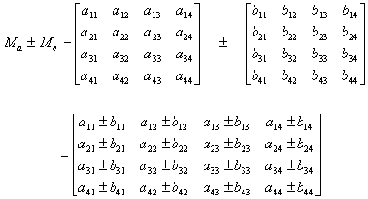
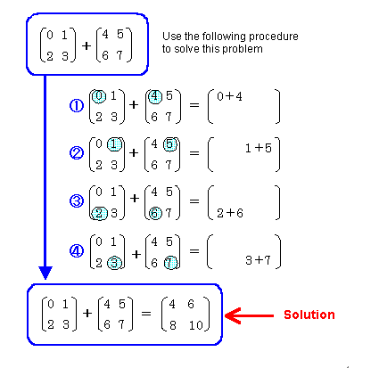
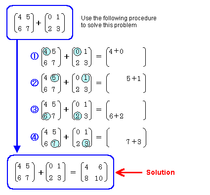
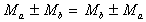
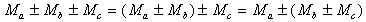

Adding or subtracting matrices is accomplished using this formula:

Here's an easy example showing how to add matrices together:

Here's another example. This one switches the order of the same matrices and shows that the result is still the same:

As you can see from these examples, the commutative law is valid for matrix addition and subtraction. In other words, you can switch the calculation order:

The associative law is also valid:

Nintendo® Confidential
Copyright © 1999
Nintendo of America Inc. All Rights Reserved
Nintendo and N64 are registered trademarks of Nintendo
Last Updated March, 1999